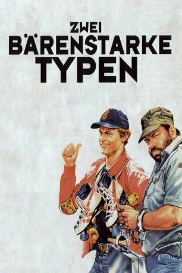

#4402 Zwei bärenstarke Typen
Alternativ: Go for It (Englischer Titel)
 
 IMDB-Wertung: 7.2 / 10
IMDB-Wertung: 7.2 / 10  Metascore: 0
Metascore: 0 
Der Globetrotter Rosco und der gerade aus dem Knast entlassene Doug werden nach einer Schlägerei in einer Raststätte mit zwei CIA Top-Agenten verwechselt, die den Verbrecherring des geheimnisvollen K1 zerschlagen sollen. Da die beiden Geheimagenten wider Willen schnell Spaß am luxuriösen Agentenleben finden, möbeln sie kurzerhand die Verbrecher ordentlich auf. Dabei bringen die beiden Freizeitspione nicht nur K1 und den amerikanischen Geheimdienst um den Verstand, sondern werden nebenbei noch zu den Rettern der gesamten Erde – natürlich nicht, ohne vorher noch einiges in Schutt und Asche zu legen ... Die Warnungen der Bewohner scheinen blutige Früchte zu tragen, denn der kopflose Reiter ist schon unterwegs um sich einen nach dem anderen zu holen.
Jahr: 1983
Dauer: 108 Minuten
FSK: 6
Land: Studio: CEIADTonspuren:
Untertitel:
Auflösung: 1080p (1920x1080) Größe: 8949 MB
Genre: Action, Komödie, Abenteuer
Regisseur: Enzo Barboni
Drehbuch: Dario Argento
Soundtrack:
Darsteller:
 Terence Hill als Rosco Frazer / Steinberg
Terence Hill als Rosco Frazer / Steinberg Bud Spencer als Doug O'Riordan / Mason
Bud Spencer als Doug O'Riordan / Mason David Huddleston als Tiger
David Huddleston als Tiger Dan Fitzgerald als Hotel Concierge
Dan Fitzgerald als Hotel Concierge George Coutoupis als Rockstar on Airplane , uncredited
George Coutoupis als Rockstar on Airplane , uncredited- Darcy Shean als Woman in Restaurant , uncredited
- Buffy Dee als K1
- Riccardo Pizzuti als Dottor Spider, aka 'il tipo infido'
- Faith Minton als La fatalona
- Dan Rambo als Jeremy Scott
- Susan Teesdale als Barmaid
- Al Nestor als Hamburger Vendor
- Christine Troples als Concerned, younger wife in Pizza bar
- Woody Woodbury als Agent on Plane
- Giancarlo Bastianoni als Black Suit Thug , uncredited
- Harold Bergman als Sam , uncredited
- Alex Edlin als Man in Bar Reading Newspaper , uncredited
- Charles P. Harris als Restaurant Person , uncredited
- Joe Hess als Man in Bar Talking to Friend , uncredited
 Mal Jones als Pain in the Neck in Prison , uncredited
Mal Jones als Pain in the Neck in Prison , uncredited- Jeff Moldovan als Charlie Chan - Leader of Asian Fighters , uncredited
- Raffaele Mottola als Foreign Correspondent in Video Conference , uncredited
- Clayton Sauer als Man in Restaurant , uncredited
- Joey Silvera als Leonard , uncredited
- Paul Tenn als Killer , uncredited
- Clarence Thomas als Cleaner at airport , uncredited
Datei: X:\Person\Bud Spencer + Terence Hill\Zwei bärenstarke Typen (1983, FSK6, 1920x1080).mkv seit 13.09.2016
Festplatte: HD Collection-7+mehr(A-Z)+Person
 Es gibt insgesamt 43 Filme in der Gruppe 'Person\Bud Spencer + Terence Hill'
Es gibt insgesamt 43 Filme in der Gruppe 'Person\Bud Spencer + Terence Hill'